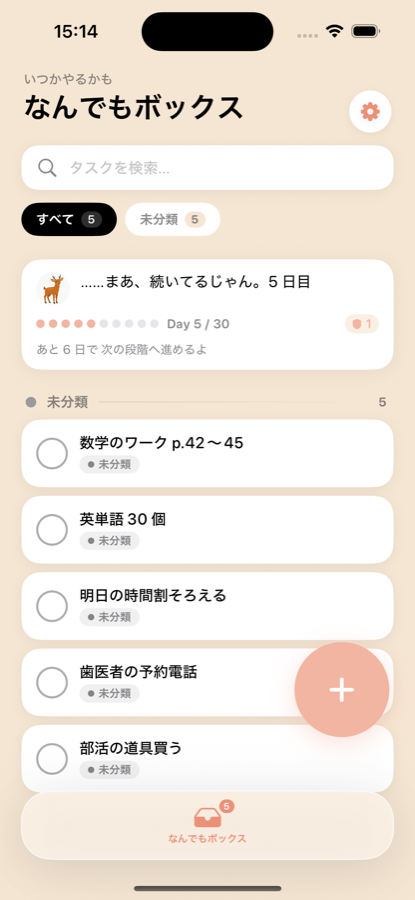
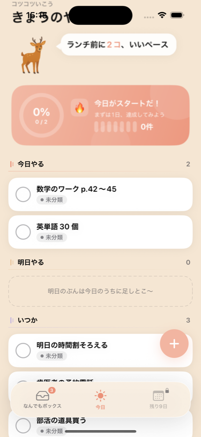
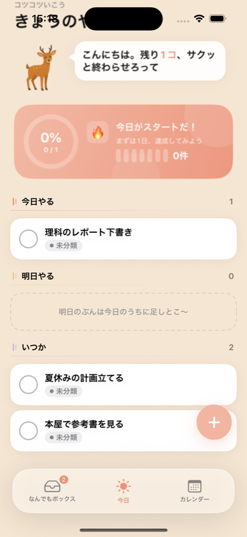
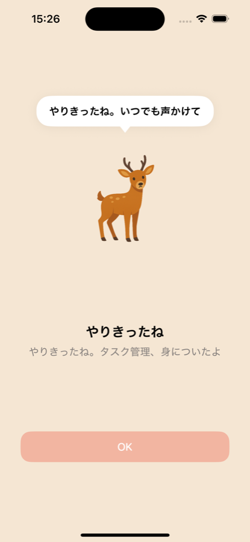

毎週月曜にリセットされて、1 個自動配布。連続が途切れそうな日に 自動で消費 されて、streak を守ります。
「サボっちゃった……」って凹まなくていいように。
少しずつできることを増やしながら、自分のペースで。中学生・高校生のためのタスク管理アプリ。
📱 App Store でダウンロード iPhone / iOS 17.4+ / 買い切り ¥300
「今日」「なんでもボックス」「カレンダー」と並んでも、何から書けばいいか分からない
最初は 1 つの画面だけ。慣れてきたら、できることが少しずつ増えていく。



30 日続けたら、もう「タスク管理ができる人」。
ヤルシカ先輩がそっと送り出して、これからは対等の伴走者に。

1 日忘れても streak が続く保険。週に 1 回もらえます。
毎週月曜にリセットされて、1 個自動配布。連続が途切れそうな日に 自動で消費 されて、streak を守ります。
「サボっちゃった……」って凹まなくていいように。
表面ツンデレ。失敗しても責めない。30 日達成したら送り出す。
お守りが残っていれば自動で守ってくれます（週 1 回もらえる）。お守りが切れていたら、streak は 0 にリセットされますが、解放済みの機能（「今日やる」やカレンダー）は そのまま使えます。
設定画面から「ビギナーモードを終了する」でいつでも全機能解放できます。streak はリセットされますが、後から「30 日チャレンジを始める」で再開も可能です。
全機能が常時使える状態になります。ヤルシカ先輩のお守りも引き続き機能。卒業バッジが設定画面に永続表示されます。
朝の確認 + 18:00 + 22:00 の 3 回だけ。当日タスクを追加したら、夕方の通知はキャンセルされます。
オンボーディング画面で「すぐに自由に使う」を選べば、最初から全機能が使えます。